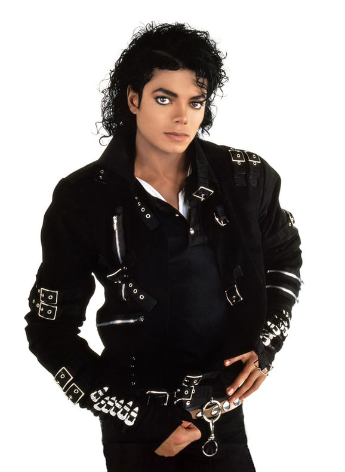
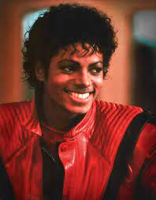
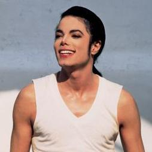

Michael Joseph Jackson (Gary, 29 de agosto de 1958 — Los Angeles, 25 de junho de 2009) foi um cantor, compositor e dançarino estadunidense. Apelidado de "Rei do Pop", foi um dos ícones culturais mais importantes e influentes de todos os tempos e um dos maiores artistas da história da música. Suas contribuições para a música, a dança e a moda por mais de quatro décadas, juntamente com a divulgação de sua vida pessoal, fizeram dele uma figura global na cultura popular.
Um pouco da história do Michael, o cantor Michael Jackson começou sua carreira musical há mais de quatro décadas, em 1962, no grupo Jackson´s Five, ao lado dos quatro irmãos. Nascido em 1958 na cidade de Gary, no estado americano de Indiana, ele tinha apenas cinco anos quando despontou para o estrelato ao lado de Jackie, Jermaine, Tito, Marlon. Michael começou a cantar sozinho em 1970, ainda durante as apresentações do Jackson´s Five.
   voltar